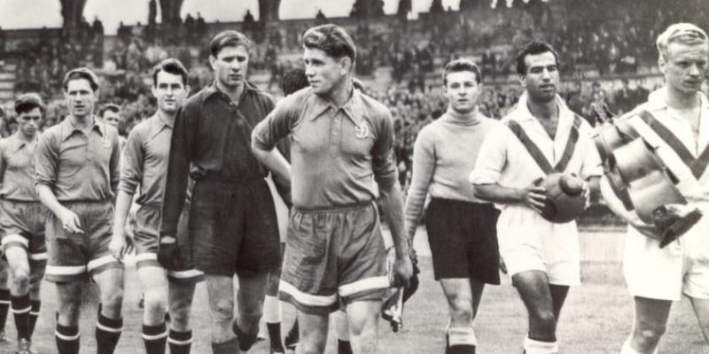
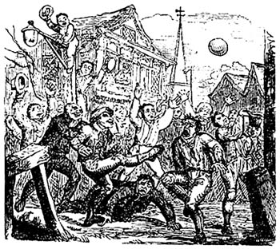
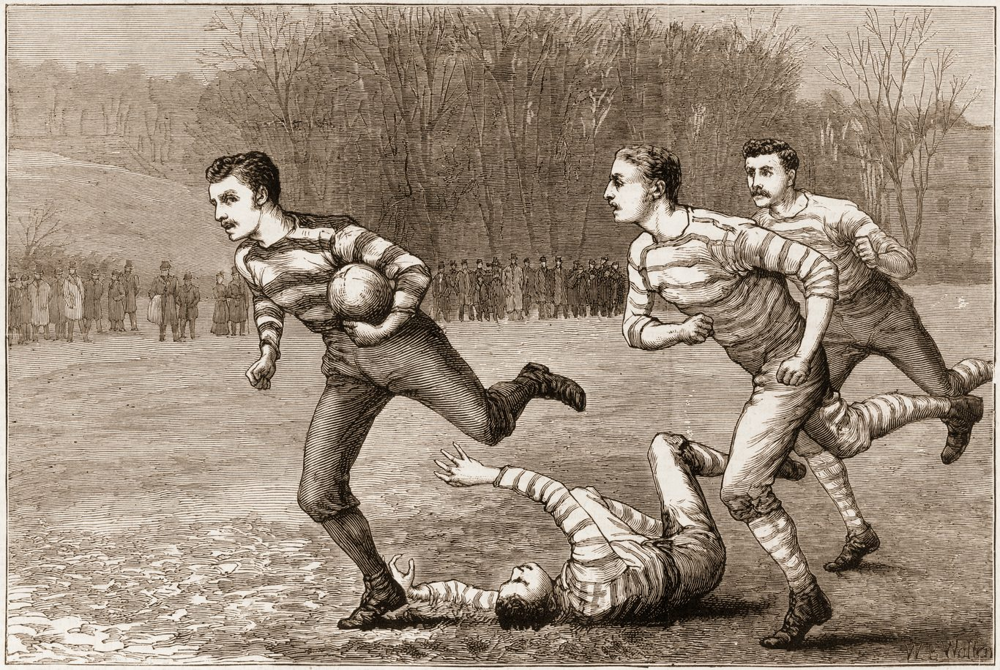
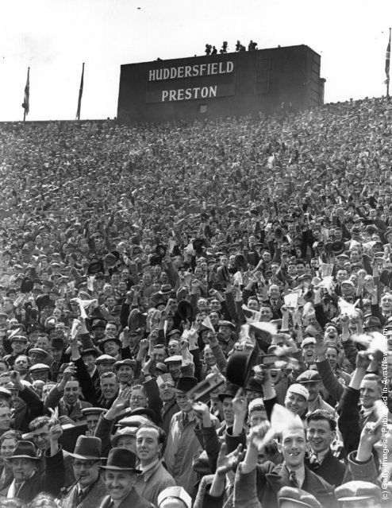
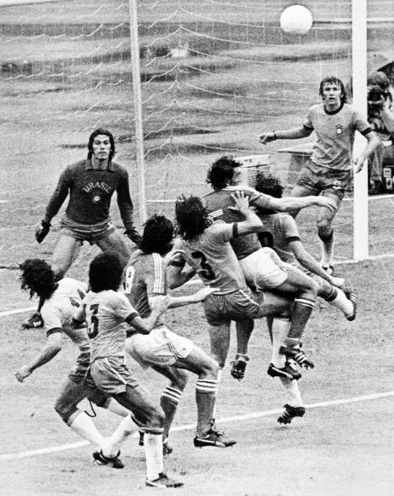

Origenes del fútbol



El fútbol es uno de los deportes más populares del mundo, pero sus orígenes se remontan a miles de años atrás. Diferentes civilizaciones practicaban juegos similares que consistían en patear una pelota.
Uno de los antecedentes más conocidos es el Cuju, practicado en China alrededor del siglo III a.C. En este juego los jugadores debían patear una pelota de cuero e intentar introducirla en una red sin usar las manos.
También existieron juegos parecidos en civilizaciones como Grecia y Roma, donde se practicaban actividades con pelota que requerían habilidad, estrategia y trabajo en equipo.
El nacimiento del fútbol moderno
El fútbol moderno comenzó a desarrollarse en Inglaterra durante el siglo XIX. En esa época diferentes escuelas y universidades jugaban versiones distintas del juego, cada una con sus propias reglas.
En 1863 se fundó la organización que estableció las primeras reglas oficiales del fútbol:
Expanción mundial



A finales del siglo XIX y principios del siglo XX, el fútbol comenzó a expandirse rápidamente por todo el mundo gracias a marineros, comerciantes y estudiantes británicos.
Fútbol en la actualidad
Hoy en día, el fútbol es el deporte más practicado y seguido en el mundo. Millones de personas juegan fútbol en diferentes niveles, desde amateur hasta profesional.